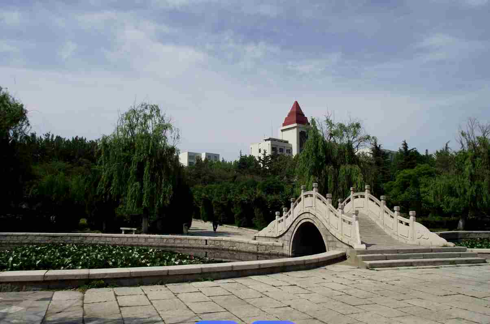
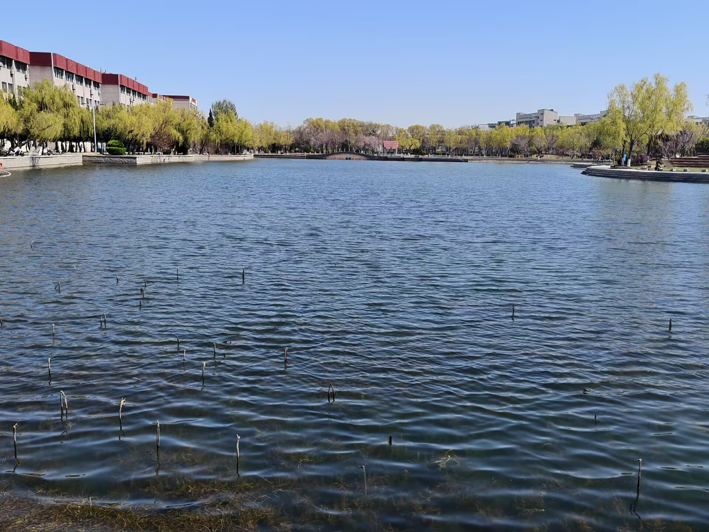
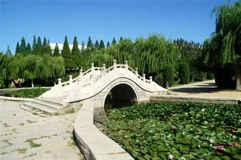

春天一到，我们的校园就彻底变了样子，到处都是生机勃勃的景象。刚进校门，道路两边的树就抽出了新芽，嫩绿色的叶子看着特别舒服，风一吹就轻轻晃，像是在跟我们打招呼。往前走就是学校的小湖，湖水清清的，岸边的柳树都发芽了，长长的柳条垂到水面上，就像给湖水围了一圈绿边。湖里还有小鱼游来游去，偶尔还能看到几只鸭子在水面上划水，特别有意思。湖边的草坪也绿了，软软的，很多同学下课了就坐在上面晒太阳、聊天，还有人在湖边背书，氛围特别好。
除了湖边，校园里还有很多好看的地方。教学楼旁边的花坛里，各种花都开了，有粉色的、黄色的、白色的，五颜六色的，特别好看。早上的时候，校园里还会有一层薄薄的雾，太阳出来之后，雾慢慢散掉，阳光透过树叶洒下来，地上都是斑驳的光影，特别好看。傍晚的时候，夕阳照在校园里，整个校园都暖暖的，教学楼的灯一个个亮起来，看着特别温馨。春天的校园，不管是早上、中午还是晚上，都有不一样的风景，走在校园里，心情都会变好，也让我们在学习的时候更有动力。


